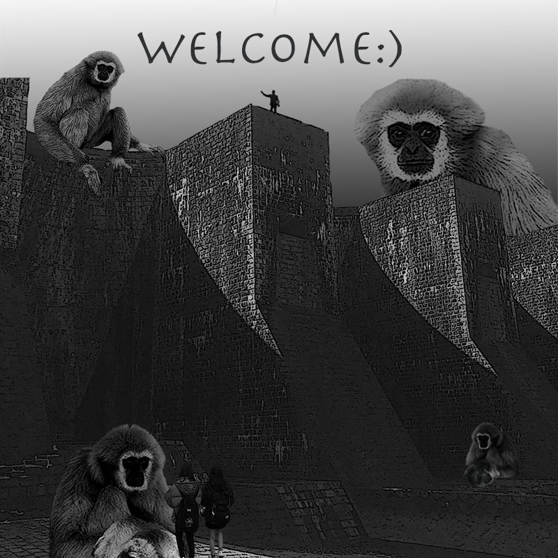

study
ソフトウェアネットワーク演習I
5/8 アイコン作成・提出（プロフィール）
想像していたデザインにより近しいものをwebで探し、それを参考に図形を利用して作成した
星形を使って表したのび太のようなアホ毛は愛らしさを表現している
1000px x 1000pxのPhotoshopで加工した画像のレビュー

人やお猿の対比を変えて、不思議な世界を演出、イメージはハリーポッターで、モノクロに統一させているところがポイント
明暗や写真の貼り付けをメインで進めた
京都造形（クロステックデザインコース）のwebページを改造する
6/20 特別授業with福野泰介先生・アプリの作成
福野泰介の一日一創
課題